[6-6] 输入捕获模式测频率 / PWMI模式测频率占空比 — 学习笔记
- 课程：江协科技《STM32入门教程-2023版 细致讲解 中文字幕》
- 视频：BV1th411z7sn?p=18，35:26（2126 秒）
- 素材：236 帧关键帧（每 9 秒，宽 1280px）+ PP-OCRv4 画面硬字幕 OCR（608 段）；关键截图 19 张随笔记收录（源图在
vidsum_out/stm32_p18/frames/，站内图片在assets/images/stm32-18/） - 字幕情况：该集 B 站没有 CC/AI 字幕，文本由画面烧录的中文字幕 OCR 得到（source=subtitle-ocr）；本集字幕里混入了大量 Keil Build Output（
0 Error(s), 0 Warning(s)、Flash Load finished at ...）和编译器路径行，这些不是老师口述内容，已剔除，错字已按画面校正（清单见文末「存疑」）。 - 本集定位：这是 [6-5] 输入捕获的代码课——理论（输入捕获结构、滤波器/边沿/分频器、主从触发、测频法/测周法公式）全部在上一集 P17，本集不重复推导，只写代码 + 看 OLED 现象 + 评估性能。一共两个程序：①
6-6 输入捕获模式测频率（00:00–26:40）、②6-7 PWMI模式测频率占空比（26:40–35:26），最后 32:40–35:26 是测频率的性能评估（量程下限、上限、晶振误差）。
一句话结论
本集把 [6-5] 的输入捕获理论落成两个工程：程序一（测频率）从 P16 的 6-3 PWM驱动LED呼吸灯 复制——先把 PWM 模块改造成「固定 ARR=100-1、用 PSC 调频率」（因为占空比 CCR/(ARR+1) 只跟 ARR 有关，改 ARR 会连占空比一起变），并新增 PWM_SetPrescaler（内部调 TIM_PrescalerConfig(TIM2, Prescaler, TIM_PSCReloadMode_Immediate)）；再新建 IC.c，按六步写 IC_Init：① 开 RCC 时钟（TIM3 因为 TIM2 被 PWM 占了）② PA6 配 GPIO_Mode_IPU 上拉输入 ③ 时基 ARR = 65536-1、PSC = 72-1 → 标准频率 fc = 72M/72 = 1MHz ④ TIM_ICInit 五成员：TIM_Channel_1、TIM_ICFilter = 0xF、TIM_ICPolarity_Rising、TIM_ICPSC_DIV1、TIM_ICSelection_DirectTI ⑤ TIM_SelectInputTrigger(TIM3, TIM_TS_TI1FP1) ⑥ TIM_SelectSlaveMode(TIM3, TIM_SlaveMode_Reset)，最后 TIM_Cmd 启动——这一套配完，每次上升沿把 CNT 锁进 CCR1、并由从模式硬件清零 CNT，于是 fx = fc/CCR1 = 1000000/TIM_GetCapture1(TIM3)；实测 1001Hz（比 1000 多 1，属 ±1 计数误差，作者推测是「快到 1000 时信号刚好跳变、这个数没计到」），为了「凑整」在读数里 +1 后显示 1000Hz。程序二（PWMI）由 6-6 复制，只改输入捕获初始化：先手动配「通道 1 直连 + 上升沿、通道 2 交叉 + 下降沿」，再用 ST 封装好的 TIM_PWMIConfig(TIM3, &TIM_ICInitStructure) 一次搞定（它只支持通道 1/2，内部会自动把另一通道配成相反极性/反向选择）；于是 CCR1 = 整周期计数值、CCR2 = 高电平计数值，IC_GetDuty = (TIM_GetCapture2+1)*100 / (TIM_GetCapture1+1) 返回 0～100，现象 1000Hz / 50%，改参数后 100Hz / 80%。最后性能评估：fc = 1MHz、CNT 最大 65535 ⇒ 量程下限 ≈ 1M/65535 ≈ 15Hz（再低要加大 PSC）；上限没有硬边界，由误差要求决定（±1 误差 ≈ 1/N，要求 1/1000 则上限 1kHz、要求 1/100 则 10kHz），再高就该换测频法；实际测量还有晶振误差（本实验自己测自己没有，所以数值很稳）。理论全在 P17 [6-5]。
0. 本集定位：代码课，理论全部在 [6-5] P17
- 本集是纯代码课：0:00 第一句就是「本小节我们来学习输入捕获的代码部分」，0:09 看接线图；全程 Keil —— 复制工程 → 改造 PWM 模块 → 新建 IC 模块 → 逐行写
TIM_ICInit结构体 → 编译下载 → OLED 看现象。 - 两个工程都是「复制已有工程改名」：程序一由 P16 的
6-3 PWM驱动LED呼吸灯复制改名为6-6 输入捕获模式测频率；程序二由 6-6 复制改名为6-7 PWMI模式测频率占空比。 - 理论引用 P17 即可：输入捕获原理（引脚跳变把 CNT 锁存进 CCR）、
ICF滤波器、CC1S数据选择器、预分频、主从触发的TS/SMS、测周法fx = fc/N、PWMI 结构（上升沿捕周期 + 下降沿捕高电平），本笔记不再推导，只在用到时写「代公式」，详细推导看notes/stm32-17-TIM输入捕获.md。 - 本集还多了一块 P17 没有的内容：32:40–35:26 的测频率性能评估（量程下限、上限、晶振误差），这部分按「作者经验值」写，见第 4 章。
- 编号对照：本集视频是 [6-6]，片头两个工程目录却叫
6-6/6-7（作者按「代码小节」编号）——与 P15/P16/P17 一样，两套编号不是一回事。
1. 两个程序总览
| 程序 | 工程目录（复制自哪个工程） | 定时器 / 引脚 | 捕获方式 | 标准频率 fc | 公式 | 现象 |
|---|---|---|---|---|---|---|
| ① 输入捕获测频率 | 6-6 输入捕获模式测频率（复制 6-3 PWM驱动LED呼吸灯） |
TIM3_CH1 / PA6（PA0 是 PWM 输出，一根线连过来） | 单通道（CH1，直连 + 上升沿）+ 从模式 Reset | 1MHz（PSC=72-1） | fx = fc/CCR1 |
1001Hz → 修正后 1000Hz |
| ② PWMI 测频率占空比 | 6-7 PWMI模式测频率占空比（复制程序一） |
同左 | 两通道（CH1 上升沿 + CH2 交叉下降沿，TIM_PWMIConfig） |
同左 | fx = fc/CCR1、占空比 = CCR2/CCR1 |
1000Hz / 50%；改参数后 100Hz / 80% |
- 两个程序的接线完全相同（都是 PA0 到 PA6 的一根线），区别只在
IC.c里输入捕获单元的配置。 - 程序二只改「输入捕获初始化」这一段：时钟、GPIO、时基都不动。
- 两个程序共用同一个 PWM 信号源（P16 的 PWM 模块改造而来），所以能「自己测自己」。
2. 程序一：输入捕获模式测频率（00:00–26:40）
2.1 接线：把 PA0 连到 PA6
- 测量信号的输入引脚是 PA6（P17 讲过 PA6 = TIM3_CH1），待测的 PWM 信号也是 STM32 自己生成的、输出引脚是 PA0——所以接线直接用一根线把 PA0 引到 PA6 就行了。
- 如果手上有信号发生器：把它设置成方波输出，高电平 3.3V、低电平 0V，直接接到 PA6，别忘了共地——这样接线也可以。
- 面包板上实际就是一根飞线：一端接 PA6，另一端接 PA0。
- 两个程序的接线都是一样的（都是接一根线，从 PA0 到 PA6）。
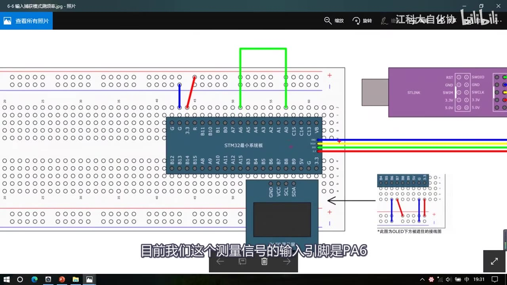
图 1：接线图 6-6 输入捕获模式测频率——面包板上的 STM32 最小系统板 + ST-Link + OLED，一根绿色飞线把 PA0（PWM 输出）与 PA6（TIM3_CH1 输入捕获脚）连起来自测；字幕「目前我们这个测量信号的输入引脚是PA6」
2.2 复制工程，并改造 PWM 模块
复制工程：借用之前写好的 PWM 模块来生成待测信号，所以直接复制 6-3 PWM驱动LED呼吸灯 的代码，改名为 6-6 输入捕获模式测频率，删掉之前用不到的显示代码，先编译一下。
为什么要改造 PWM 模块：原来 PWM 的频率是在初始化里写死的，运行时调不方便；而
PWM 频率 = 72M/(PSC+1)/(ARR+1)，PSC 和 ARR 都能调频率；- 但
占空比 = CCR/(ARR+1)，用 ARR 调频率会同时改变占空比，用 PSC 调频率则不影响占空比，显然更方便。
改造方案：固定 ARR = 100-1（分辨率 1%），用 PSC 调频率；这样还有个好处——CCR 的数值直接就是占空比的百分数（ARR+1 = 100），用起来直观。如果项目需要更高的分辨率（比如 0.1%），就固定 ARR = 1000-1，此时频率 = 72M/预分频/1000、占空比 = CCR/1000。
新增函数 PWM_SetPrescaler（在 PWM 模块最后加）：
void PWM_SetPrescaler(uint16_t Prescaler)
{
TIM_PrescalerConfig(TIM2, Prescaler, TIM_PSCReloadMode_Immediate);
}
- 库函数
TIM_PrescalerConfig就是单独写入 PSC 的函数（因为多了个重装模式参数，所以叫 Config 不叫 Set；本质就是写 PSC）。 - 第三个参数是重装模式：
TIM_PSCReloadMode_Update是在更新事件重装（有缓存器、延迟写入，保证每个周期完整）；TIM_PSCReloadMode_Immediate是立即重装——写入的值立刻生效，可能会在值改变时切断当前波形，比如 PWM 一个周期刚过一半就立即生效，就会立刻切断当前周期、开始新的一个周期，频率变化时会出现一个不完整的周期。 - 本程序要求不高，哪个都行，这里选立即生效（
Immediate）。
主函数里产生 1kHz / 50% 的待测信号：
PWM_Init();
PWM_SetPrescaler(720 - 1); //Freq = 72M / (PSC + 1) / 100
PWM_SetCompare1(50); //Duty = CCR / 100
- 代公式：
72M/(720)/100 = 1kHz，50/100 = 50%，于是 PA0 输出 1kHz、50% 的待测信号。
2.3 写 IC 代码前先理清六步
对照 P17 的「输入捕获基本结构」图，把电路连成图里的样子需要六步（最后还要 TIM_Cmd 启动、读 CCR 算频率）：
| 步 | 做什么 |
|---|---|
| ① | RCC 开启时钟：把 GPIO 和 TIM 的时钟打开 |
| ② | GPIO 初始化：配置成输入模式（一般选上拉输入或浮空输入） |
| ③ | 配置时基单元：让 CNT 在内部时钟驱动下自增（和之前的代码一样） |
| ④ | 配置输入捕获单元：滤波器、极性、直连还是交叉、分频器（用一个结构体统一配） |
| ⑤ | 选择从模式的触发源：选 TI1FP1 |
| ⑥ | 选择触发后执行的操作：选 Reset |
| ⑦ | 调用 TIM_Cmd 开启定时器 |
| — | 需要读频率时，读 CCR 寄存器、按 fc/N 算 |
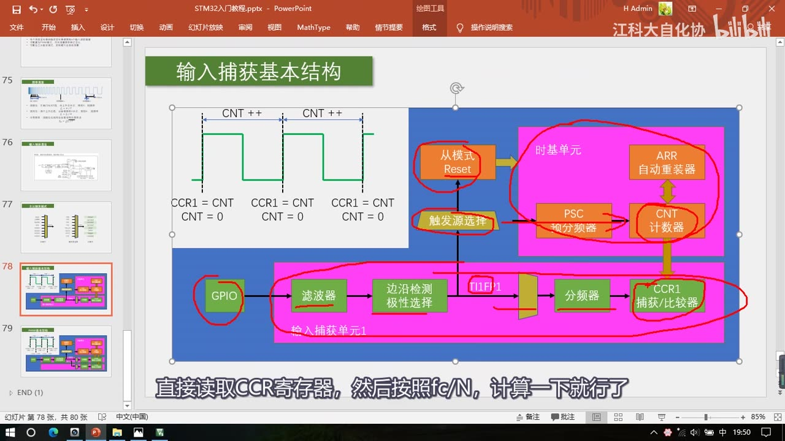
图 2：PPT「输入捕获基本结构」被红圈逐块标出——时基单元（PSC/ARR/CNT）、从模式 Reset、触发源选择、GPIO、滤波器、边沿检测极性选择、TI1FP1、分频器、CCR1 捕获/比较器；字幕「直接读取CCR寄存器，然后按照fc/N，计算一下就行了」
2.4 输入捕获相关的库函数
打开 stm32f10x_tim.h：
| 函数 | 作用 | 要点 |
|---|---|---|
TIM_ICInit(TIMx, &结构体) |
配置输入捕获单元 | 4 个通道共用一个函数，靠结构体里的 TIM_Channel 选通道（输出比较是每通道一个函数 TIM_OC1～4Init） |
TIM_PWMIConfig(TIMx, &结构体) |
快速配置 PWMI 模式 | 配置两个通道，程序二用 |
TIM_ICStructInit(&结构体) |
给输入捕获结构体赋初始值 | 一般可不用 |
TIM_SelectInputTrigger |
选输入触发源 TRGI | 对应「从模式的触发源选择」 |
TIM_SelectOutputTrigger |
选输出触发源 TRGO | 对应主模式输出 |
TIM_SelectSlaveMode |
选从模式 | 本节选 Reset |
TIM_SetIC1/2/3/4Prescaler |
单独配各通道的分频器 | 结构体里也能配，效果一样 |
TIM_GetCapture1/2/3/4 |
读各通道 CCR | 输入捕获模式下 CCR 只读，要用 GetCapture 读出；输出比较模式下 CCR 只写，要用 SetCompare 写入 |
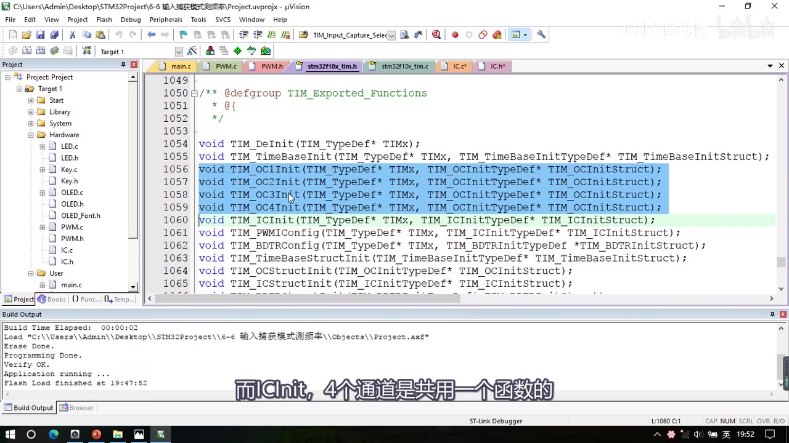
图 3：stm32f10x_tim.h 函数列表——TIM_OC1Init～TIM_OC4Init（高亮）、TIM_ICInit（高亮）、TIM_PWMIConfig、TIM_ICStructInit 等；字幕「而 ICInit，4 个通道是共用一个函数的」
2.5 IC_Init 完整代码（程序一最终版）
#include "stm32f10x.h"
void IC_Init(void)
{
/* ① 时钟：TIM3 是 APB1 外设；GPIOA 在 APB2 */
RCC_APB1PeriphClockCmd(RCC_APB1Periph_TIM3, ENABLE);
RCC_APB2PeriphClockCmd(RCC_APB2Periph_GPIOA, ENABLE);
/* ② GPIO：PA6 上拉输入（TIM3_CH1） */
GPIO_InitTypeDef GPIO_InitStructure;
GPIO_InitStructure.GPIO_Mode = GPIO_Mode_IPU;
GPIO_InitStructure.GPIO_Pin = GPIO_Pin_6;
GPIO_InitStructure.GPIO_Speed = GPIO_Speed_50MHz;
GPIO_Init(GPIOA, &GPIO_InitStructure);
TIM_InternalClockConfig(TIM3);
/* ③ 时基单元：ARR 满量程、PSC = 72-1 → fc = 1MHz */
TIM_TimeBaseInitTypeDef TIM_TimeBaseInitStructure;
TIM_TimeBaseInitStructure.TIM_ClockDivision = TIM_CKD_DIV1;
TIM_TimeBaseInitStructure.TIM_CounterMode = TIM_CounterMode_Up;
TIM_TimeBaseInitStructure.TIM_Period = 65536 - 1; // ARR
TIM_TimeBaseInitStructure.TIM_Prescaler = 72 - 1; // PSC
TIM_TimeBaseInitStructure.TIM_RepetitionCounter = 0;
TIM_TimeBaseInit(TIM3, &TIM_TimeBaseInitStructure);
/* ④ 输入捕获单元：通道1、滤波 0xF、上升沿、不分频、直连 */
TIM_ICInitTypeDef TIM_ICInitStructure;
TIM_ICInitStructure.TIM_Channel = TIM_Channel_1;
TIM_ICInitStructure.TIM_ICFilter = 0xF;
TIM_ICInitStructure.TIM_ICPolarity = TIM_ICPolarity_Rising;
TIM_ICInitStructure.TIM_ICPrescaler = TIM_ICPSC_DIV1;
TIM_ICInitStructure.TIM_ICSelection = TIM_ICSelection_DirectTI;
TIM_ICInit(TIM3, &TIM_ICInitStructure);
/* ⑤⑥ 主从触发：触发源 TI1FP1、从模式 Reset（自动清零 CNT） */
TIM_SelectInputTrigger(TIM3, TIM_TS_TI1FP1);
TIM_SelectSlaveMode(TIM3, TIM_SlaveMode_Reset);
/* 启动定时器 */
TIM_Cmd(TIM3, ENABLE);
}
uint32_t IC_GetFreq(void)
{
return 1000000 / (TIM_GetCapture1(TIM3) + 1); // fc = 1MHz
}
各步骤的细节（视频里都专门讲了）：
- 定时器为什么换 TIM3：TIM2 已经被 PWM 输出占用了，所以输入捕获换一个定时器——TIM3 也是 APB1 的外设，所以开时钟还是用
RCC_APB1PeriphClockCmd。 - 引脚怎么定：查引脚定义表，TIM3_CH1～CH4 分别是 PA6 / PA7 / PB0 / PB1；本程序用 CH1，所以是 PA6，GPIO 模式选
GPIO_Mode_IPU上拉输入。 - ARR 给 65536-1：根据上一小节的分析，ARR 要设大一些防止计数溢出，这里直接给最大值 65536-1，即 16 位计数器满量程计数。
- PSC 给 72-1：PSC 决定测周法的标准频率 fc = 72M/预分频 = 72M/72 = 1MHz；这个值要根据你信号频率的分布范围来调整（先给 72-1）。
TIM_ICInit五个成员：TIM_Channel_1选通道、TIM_ICFilter = 0xF（0x0～0xF，越大滤波效果越好；本程序给最大档、「多给点滤波」）、TIM_ICPolarity_Rising上升沿触发、TIM_ICPrescaler = TIM_ICPSC_DIV1不分频、TIM_ICSelection_DirectTI直连通道。- 分频器只有 4 档：
TIM_ICPSC_DIV1 / DIV2 / DIV4 / DIV8——分频值不能任意指定，只能选这 4 种；本程序要「每次触发都有效」，选 DIV1（不分频）。 - 滤波器 ≠ 分频器：两者都是「计次」的东西，但滤波器计次不会改变信号的原有频率（采样频率远高于信号频率，只滤掉高频噪声、让波形更平滑，1kHz 滤波之后仍然是 1kHz）；而分频器是对信号本身计次、会改变频率（1kHz 二分频变 500Hz、四分频变 250Hz）。
- 主从触发的两行：
TIM_SelectInputTrigger(TIM3, TIM_TS_TI1FP1)选触发源、TIM_SelectSlaveMode(TIM3, TIM_SlaveMode_Reset)选从模式 Reset。TIM_SelectSlaveMode的参数只有复位、门控、触发、外部时钟等几种（编码器模式另有函数配置，所以不在此函数的参数里）。 - 启动后 CNT 一直自增：即使没有信号过来它也会不断自增，不过这没关系——有信号来的时候，它会在从模式的作用下自动清零，不影响测量。
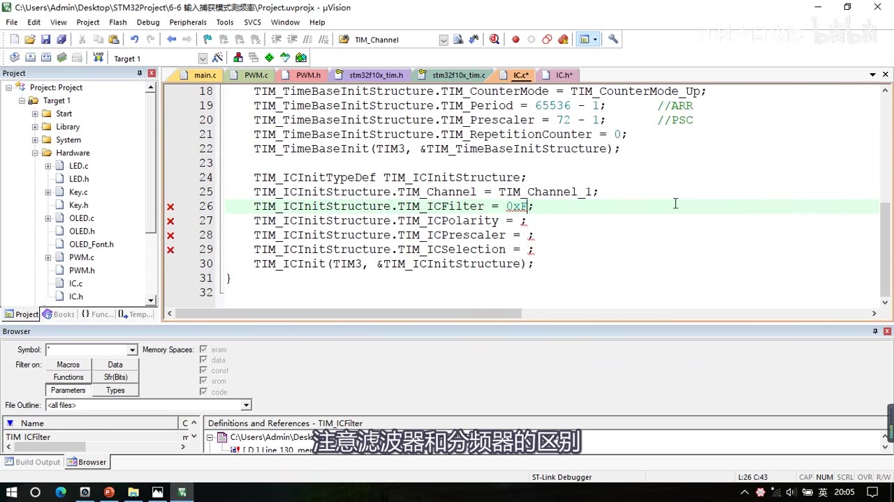
图 4：IC.c 里 TIM_ICInitStructure.TIM_ICFilter = 0xF; 一行被高亮——0x0～0xF 越大滤波越好；同一屏可见 TIM_Period = 65536 - 1; //ARR、TIM_Prescaler = 72 - 1; //PSC；字幕「注意滤波器和分频器的区别」
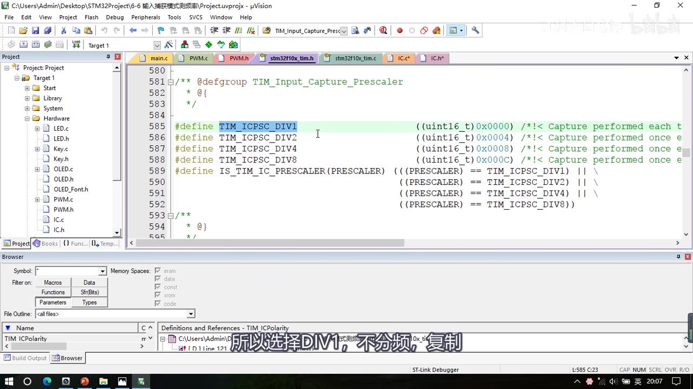
图 5：stm32f10x_tim.h 里输入捕获预分频的四个取值——TIM_ICPSC_DIV1 (0x0000)、DIV2 (0x0004)、DIV4 (0x0008)、DIV8 (0x000C)，以及 IS_TIM_IC_PRESCALER 判断宏；字幕「所以选择 DIV1，不分频，复制」
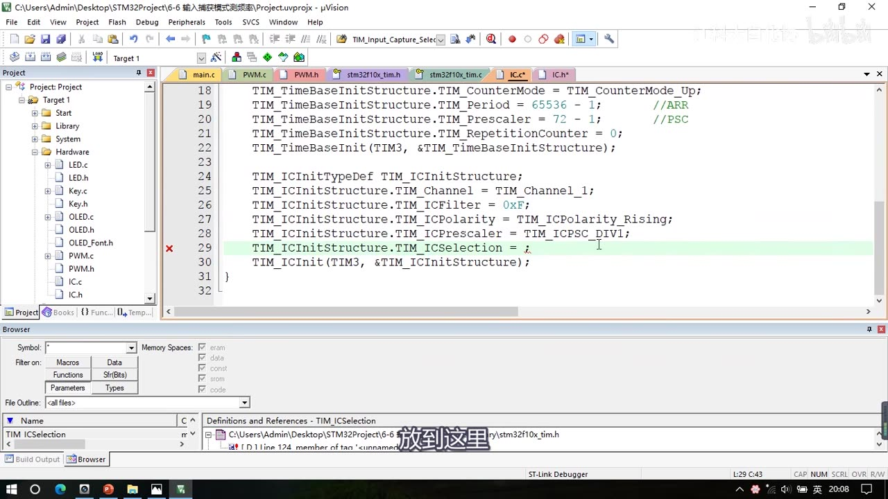
图 6：IC.c 参数全貌（20:42）——TIM_Period = 65536 - 1; //ARR、TIM_Prescaler = 72 - 1; //PSC、TIM_Channel = TIM_Channel_1、TIM_ICFilter = 0xF、TIM_ICPolarity = TIM_ICPolarity_Rising、TIM_ICPrescaler = TIM_ICPSC_DIV1、TIM_ICInit(TIM3, ...)（TIM_ICSelection 那一行此时还在输入）
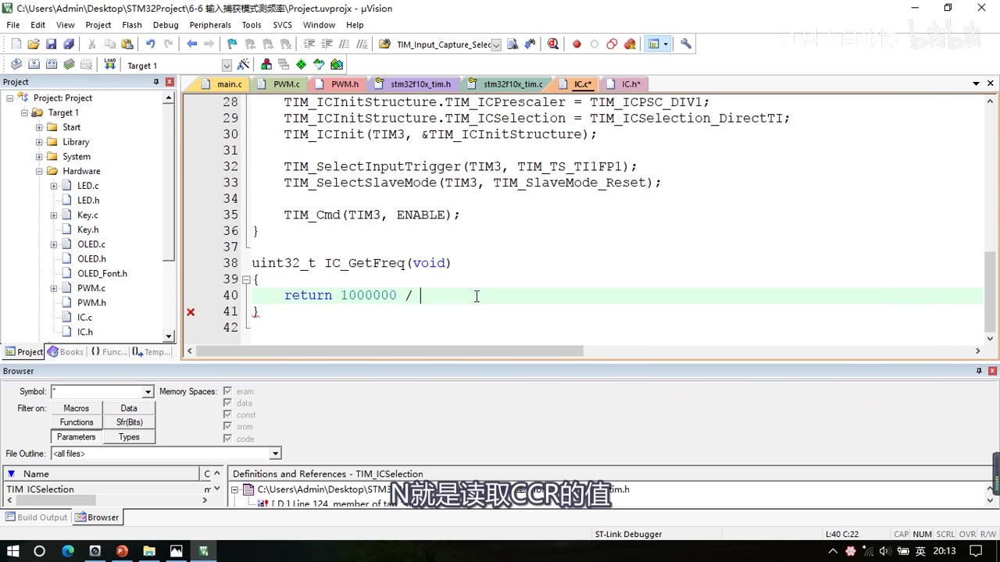
图 7：IC.c 后半段——TIM_ICSelection = TIM_ICSelection_DirectTI、TIM_ICInit(TIM3, &TIM_ICInitStructure)、TIM_SelectInputTrigger(TIM3, TIM_TS_TI1FP1)、TIM_SelectSlaveMode(TIM3, TIM_SlaveMode_Reset)、TIM_Cmd(TIM3, ENABLE)，以及 uint32_t IC_GetFreq(void){ return 1000000 / ... } 开头；字幕「N就是读取CCR的值」
2.6 频率公式：fx = fc / N = 1MHz / CCR1
- 按照 P17 的测周法：
fx = fc/N，而fc = 72M/(PSC+1) = 72M/72 = 1MHz，N就是 CCR1 的值（TIM_GetCapture1读出来的计数值）。 - 所以读频率函数就是「用 1000000 除以 CCR1 的值」，返回的是最新一个周期的频率值，单位 Hz。
2.7 主函数与现象：1001Hz 与 +1 修正
int main(void)
{
OLED_Init();
PWM_Init();
IC_Init();
OLED_ShowString(1, 1, "Freq:00000Hz");
PWM_SetPrescaler(720 - 1); //Freq = 72M / (PSC + 1) / 100
PWM_SetCompare1(50); //Duty = CCR / 100
while (1)
{
OLED_ShowNum(1, 6, IC_GetFreq(), 5);
}
}
- 链路：PWM 模块把待测信号输出到 PA0 → 导线进入 PA6 → PA6 是 TIM3 的通道 1 → 通道 1 通过输入捕获测出频率 → 主循环不断刷新 OLED。
- 现象：实测
Freq:01001Hz——「但是我们输出的是 1kHz，多了一点点」。按理说自己输出、自己测，应该不会有误差，但它很稳定地多了 1。 - 作者推测：可能是计数刚到 1000Hz 的那个数时、信号也刚好跳变（因为电路结构或者其他什么原因），导致这一个数刚好没计到——不过这也属于 ±1 误差的范畴，误差是符合要求的。
- 但「总是差那么一点，逼死强迫症」，所以在程序上补回来：给计数值 +1，补一个数——
IC_GetFreq改成return 1000000 / (TIM_GetCapture1(TIM3) + 1);，重新下载后显示Freq:01000Hz，「凑个整，现在就舒服多了」。 - 注意：这个
+1只是针对「自己测自己」这种特定信号的凑整技巧，不是通用做法——换频率、换信号源时，这个「少 1」未必出现，+1 反而可能多算（见「坑与易错点」）。
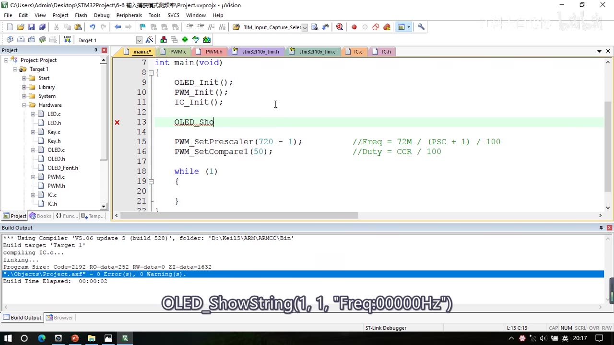
图 8：程序一主函数——OLED_Init(); PWM_Init(); IC_Init();、OLED_ShowString(1, 1, "Freq:00000Hz")、PWM_SetPrescaler(720 - 1); //Freq = 72M / (PSC + 1) / 100、PWM_SetCompare1(50); //Duty = CCR / 100；字幕「OLED_ShowString(1, 1, "Freq:00000Hz")」
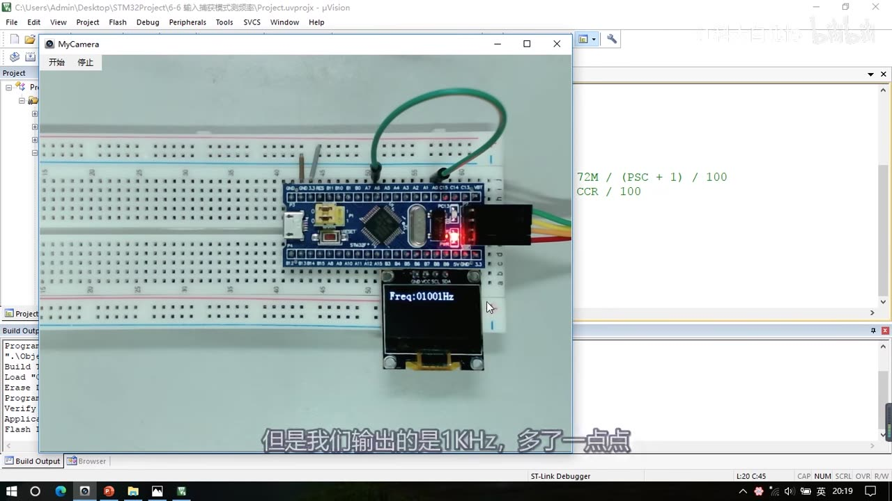
图 9：坑——OLED 显示 Freq:01001Hz（输出是 1kHz、测得多了 1）；字幕「但是我们输出的是1KHz，多了一点点」
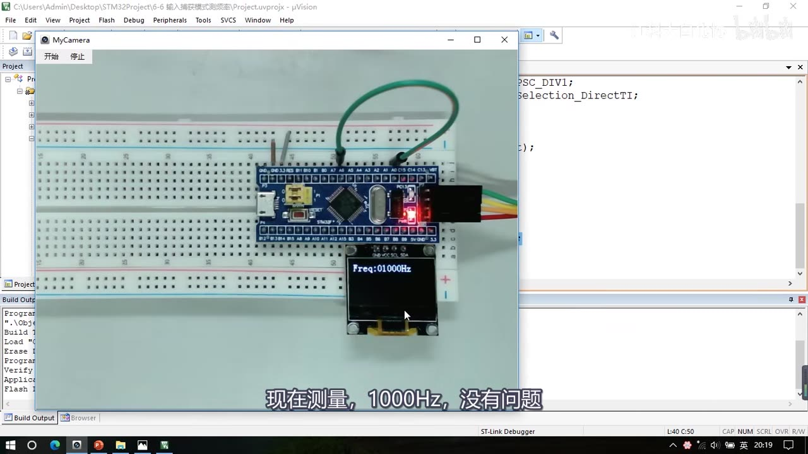
图 10：+1 修正后的现象——OLED 显示 Freq:01000Hz；字幕「现在测量，1000Hz，没有问题」
3. 程序二：PWMI 模式测频率占空比（26:40–35:26）
3.1 复制工程
- 复制刚才的
6-6 输入捕获模式测频率工程，改名为6-7 PWMI模式测频率占空比，在这个工程基础上修改。 - 开启时钟、GPIO 和时基单元都不需要更改；只需要把输入捕获初始化的那一段升级成「两个通道同时捕获同一个引脚」的模式（P17 的 PWMI 基本结构）。
3.2 手动配两个通道（过渡演示）
最「简单」的想法就是把通道初始化的部分复制一份：通道 1 保持「直连输入、上升沿触发」，下面那份改成「通道 2、交叉输入、下降沿触发」——正好对应 P17 里「通道 1 直连上升沿捕获周期、通道 2 交叉下降沿捕获高电平」的结构：
/* 通道1：直连 + 上升沿（捕获整周期） */
TIM_ICInitStructure.TIM_Channel = TIM_Channel_1;
TIM_ICInitStructure.TIM_ICSelection = TIM_ICSelection_DirectTI;
TIM_ICInitStructure.TIM_ICPolarity = TIM_ICPolarity_Rising;
TIM_ICInit(TIM3, &TIM_ICInitStructure);
/* 通道2：交叉 + 下降沿（捕获高电平时间） */
TIM_ICInitStructure.TIM_Channel = TIM_Channel_2;
TIM_ICInitStructure.TIM_ICSelection = TIM_ICSelection_IndirectTI;
TIM_ICInitStructure.TIM_ICPolarity = TIM_ICPolarity_Falling;
TIM_ICInit(TIM3, &TIM_ICInitStructure);
- 这样配置是可行的、没问题，但 ST 公司「怕我们觉得麻烦」，专门封装了一个函数来一步完成。
3.3 TIM_PWMIConfig：一次配好两个通道
TIM_ICInitStructure.TIM_Channel = TIM_Channel_1;
TIM_ICInitStructure.TIM_ICFilter = 0xF;
TIM_ICInitStructure.TIM_ICPolarity = TIM_ICPolarity_Rising;
TIM_ICInitStructure.TIM_ICPrescaler = TIM_ICPSC_DIV1;
TIM_ICInitStructure.TIM_ICSelection = TIM_ICSelection_DirectTI;
TIM_PWMIConfig(TIM3, &TIM_ICInitStructure);
- 用这个函数替换掉上面那一大段：只传一个通道的参数，函数内部会自动把剩下的一个通道配置成相反的参数——
Rising对Falling、DirectTI对IndirectTI、通道 1 对通道 2。 - 作者是「转到定义、分析源码」才知道的：源码里一堆 if 判断——传入 Rising 则对方 Falling、否则对方 Rising；传入直连则对方交叉、否则对方直连；传入通道 1 则结构体配到 TI1、对方配到 TI2，传入通道 2 则相反。
- 重要限制：这个函数只支持通道 1 和通道 2，不要传通道 3/4。
- 执行完这个函数，PWMI 电路就配好了；后面主从模式、启动定时器都不需要改。
3.4 IC_GetDuty：占空比 = CCR2/CCR1
- 根据 P17 的分析：高电平的计数值存在 CCR2 里、整个周期的计数值存在 CCR1 里，用
CCR2/CCR1就能得到占空比。 - 但这个比值范围是 0～1（小数），要显示整数就乘 100，返回 0～100 对应 0%～100%。
- 还是同一个问题：实测 CCR 总会少一个数，所以给两个值各加 1 补回来：
uint32_t IC_GetFreq(void)
{
return 1000000 / (TIM_GetCapture1(TIM3) + 1);
}
uint32_t IC_GetDuty(void)
{
return (TIM_GetCapture2(TIM3) + 1) * 100 / (TIM_GetCapture1(TIM3) + 1);
}
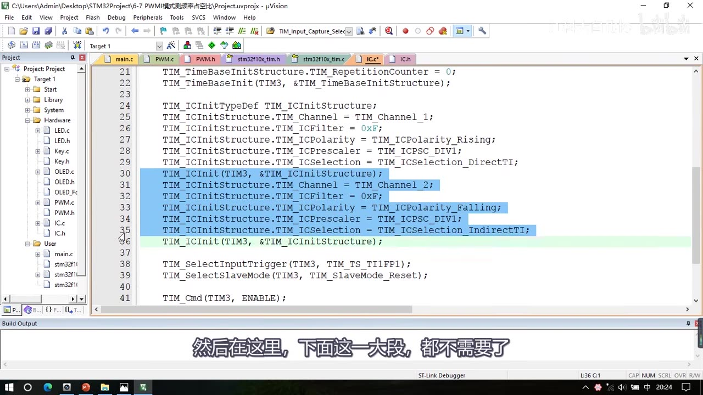
图 11：程序二 IC.c 的手动两通道配置（过渡版）——通道 1 TIM_Channel_1 / DirectTI / Rising、通道 2 TIM_Channel_2 / IndirectTI / Falling，两次 TIM_ICInit(TIM3, ...) 都被高亮；字幕「然后在这里，下面这一大段，都不需要了」
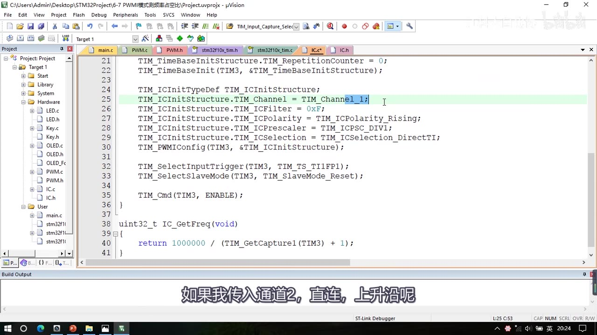
图 12：改用 TIM_PWMIConfig(TIM3, &TIM_ICInitStructure)——只配通道 1（TIM_Channel_1 一行高亮）、直连、上升沿，函数内部自动把通道 2 配成相反配置；后面跟着 TIM_SelectInputTrigger、TIM_SelectSlaveMode、IC_GetFreq（+1 版）；字幕「如果我传入通道2，直连，上升沿呢」
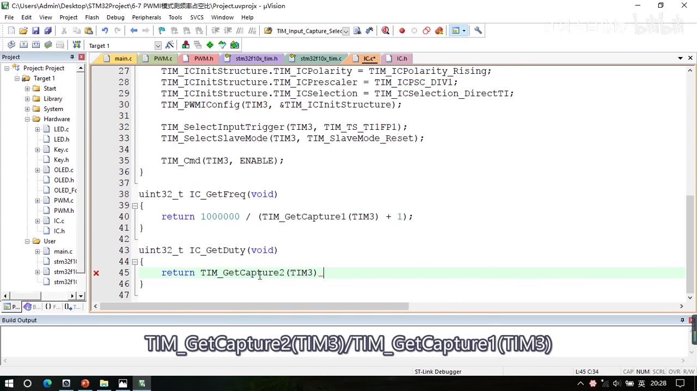
图 13：IC_GetDuty 的雏形——正在输入 return TIM_GetCapture2(TIM3) / TIM_GetCapture1(TIM3);（还没加 1、没乘 100）；字幕「TIM_GetCapture2(TIM3)/TIM_GetCapture1(TIM3)」
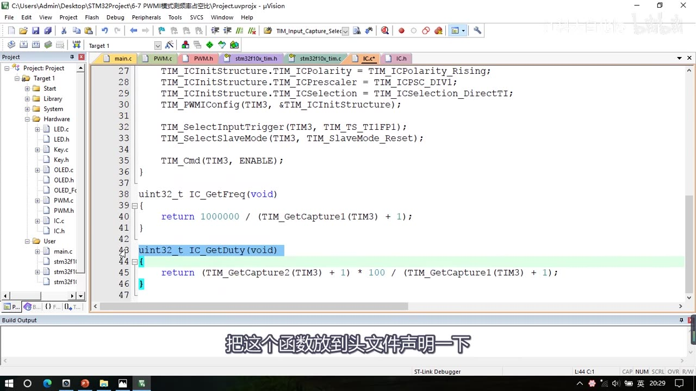
图 14：IC_GetDuty 最终版——return (TIM_GetCapture2(TIM3) + 1) * 100 / (TIM_GetCapture1(TIM3) + 1);（两个 CCR 各 +1、乘 100 返回 0～100），上面是 +1 版的 IC_GetFreq
3.5 主函数与现象
int main(void)
{
OLED_Init();
PWM_Init();
IC_Init();
OLED_ShowString(1, 1, "Freq:00000Hz");
OLED_ShowString(2, 1, "Duty:00%");
PWM_SetPrescaler(7200 - 1); //Freq = 72M / (PSC + 1) / 100
PWM_SetCompare1(80); //Duty = CCR / 100
while (1)
{
OLED_ShowNum(1, 6, IC_GetFreq(), 5);
OLED_ShowNum(2, 6, IC_GetDuty(), 2);
}
}
- 先显示两行固定字符串
Freq:00000Hz（第 1 行）和Duty:00%（第 2 行），主循环里分别刷新频率（5 位）和占空比（2 位）。 - 现象：初始
PSC = 720-1、CCR = 50时，OLED 显示Freq:01000Hz/Duty:50%，没问题。 - 改参数验证：
PWM_SetPrescaler(7200 - 1)→ 频率 100Hz；PWM_SetCompare1(80)→ 占空比 80%；下载后实测 100Hz / 80%，也没问题（作者说大家可以自行改参数尝试）。 - 到这里第二个代码写完；最后一段是性能评估（第 4 章）。
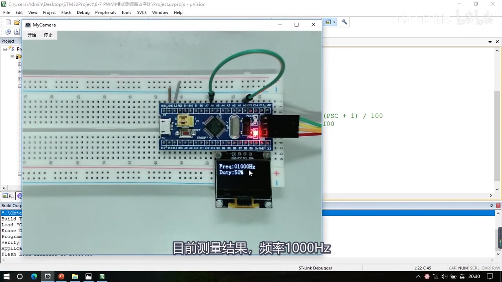
图 15：程序二现象——OLED 显示 Freq:01000Hz、Duty:50%（PSC=720-1、CCR=50）；字幕「目前测量结果，频率1000Hz」
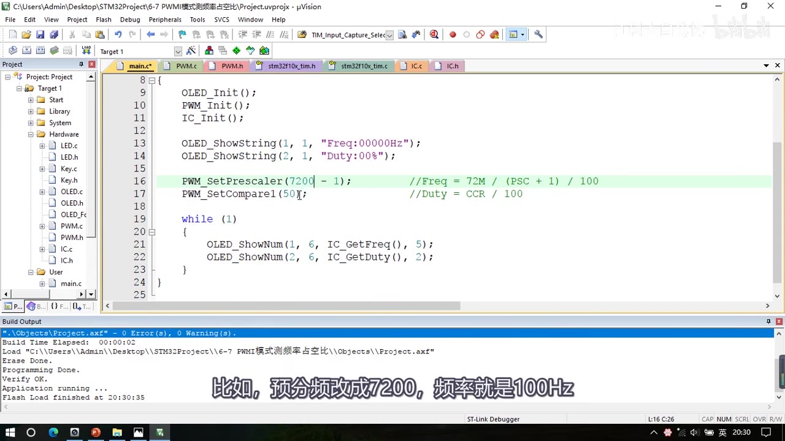
图 16：程序二主函数——两行字符串 Freq:00000Hz 与 Duty:00%，PWM_SetPrescaler(7200 - 1); //Freq = 72M / (PSC + 1) / 100、PWM_SetCompare1(50); //Duty = CCR / 100（此帧 CCR 还是 50，随后改成 80 得到 80%），主循环 OLED_ShowNum(1, 6, IC_GetFreq(), 5); + OLED_ShowNum(2, 6, IC_GetDuty(), 2);；字幕「比如，预分频改成7200，频率就是100Hz」
4. 测频率的性能评估（32:40–35:26）
这一段没有代码、也没有 PPT 公式页，是作者口述的经验值，但对「这个测频方案能用在哪」很关键。
4.1 量程下限 ≈ 15Hz
- 目前标准频率 fc = 1MHz，计数器最大只能计到 65535，所以能测的最低频率 = 1M/65535 ≈ 15Hz；信号频率再低，计数器就要溢出了。
- 想降低下限：把预分频再加大一点——这样标准频率更低，能支持的最低频率也就更低。
4.2 量程上限：由误差要求决定
- 严格说理论上的上限就是标准频率 1MHz（信号比标准频率还高肯定测不了），但这个上限没有意义——信号接近 1MHz 时误差已经非常大了。
- 实际能用多高，取决于你对误差的要求：±1 误差可以认为是 1/计数值 N——
- 要求相对误差 1/1000 ⇒ 上限 = 1M/1000 = 1kHz；
- 要求相对误差 1/100 ⇒ 上限 = 1M/100 = 10kHz。
- 想提高上限：把 PSC 降低一点、提高标准频率 fc，上限就会提高；频率还要更高就该考虑测频法了（测频法适合高频、测周法适合低频）——「对于非常高的频率，还是交给测频法来解决吧」。
4.3 还有晶振误差
- 除了 ±1 计数误差，实际测量时还有晶振误差：STM32 的晶振不是那么准，在计次几百、几万次之后误差会累积，造成一些影响。
- 本实验是自己测自己，不存在晶振误差，所以数值非常稳定；如果要测别的信号，数值可能会有些抖动，后期可以再做一些滤波处理。
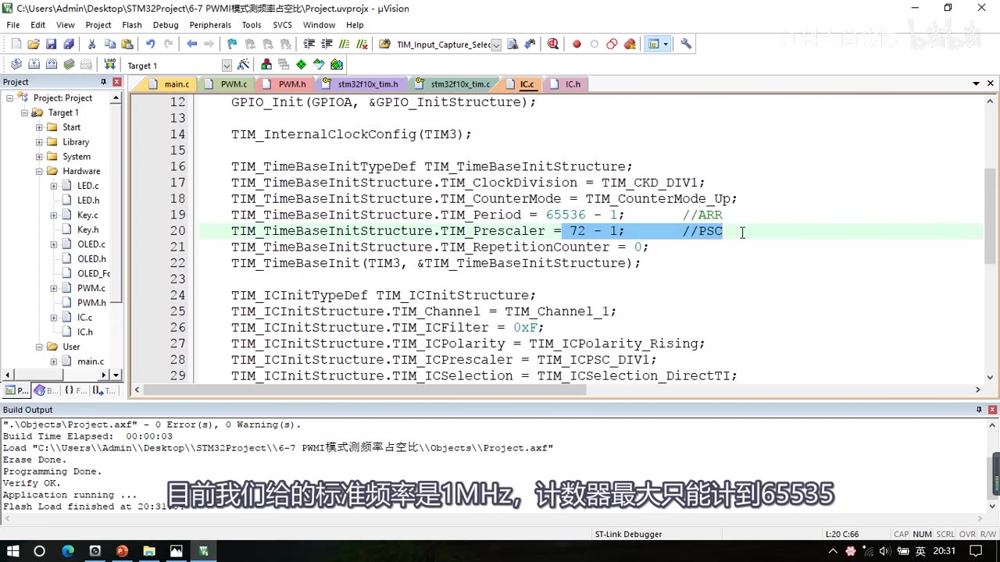
图 17：程序二 IC.c 的时基参数——TIM_Period = 65536 - 1; //ARR、TIM_Prescaler = 72 - 1; //PSC（高亮），以及 TIM_ICFilter = 0xF 等结构体成员；字幕「目前我们给的标准频率是1MHz，计数器最大只能计到65535」
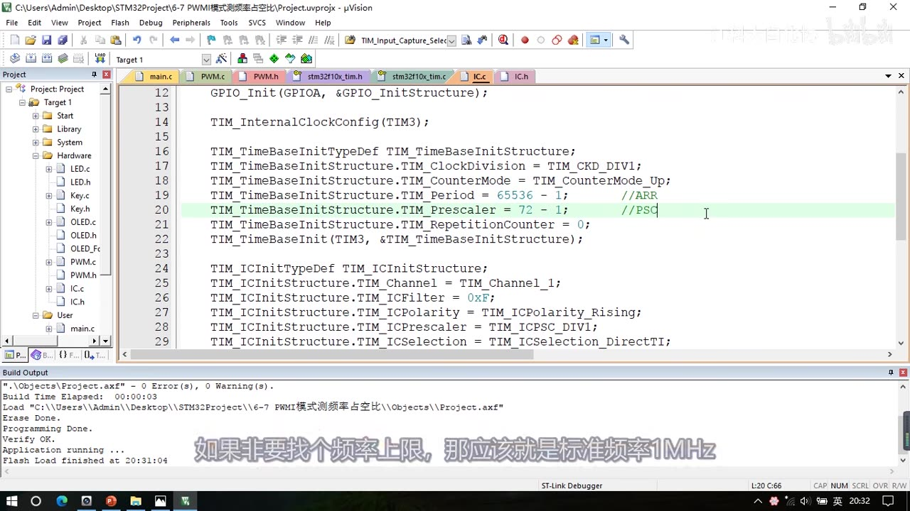
图 18：同一屏参数 + 上限结论——TIM_Period = 65536 - 1; //ARR、TIM_Prescaler = 72 - 1; //PSC；字幕「如果非要找个频率上限，那应该就是标准频率1MHz」（作者强调接近 1MHz 时误差已很大、真正上限由误差要求定）
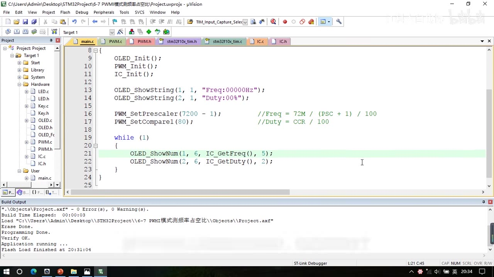
图 19：本集收尾画面——程序二 main.c 全貌：PWM_SetPrescaler(7200 - 1)（100Hz）、PWM_SetCompare1(80)（80%），主循环刷新 IC_GetFreq() 与 IC_GetDuty()；35:23「我们下节再见」，没有片尾页
5. 两个程序的共同规律
- 同一套模板：程序二在程序一基础上只改「输入捕获初始化」这一段——时钟 / GPIO / 时基 / 主从触发 /
TIM_Cmd/IC_GetFreq全部不动，只在第④步换成 PWMI 配置，再加一个IC_GetDuty。 - 测频率的公式始终是
fx = fc/CCR1：程序一、程序二都一样；占空比只是程序二多读了一个CCR2。 - 同一个信号源：两个程序都用 P16 的 PWM 模块产生测试信号（
PWM_SetPrescaler调频率、PWM_SetCompare1调占空比），接线都是 PA0→PA6。 - 读 CCR 只用
TIM_GetCapturex：输入捕获模式下 CCR 是只读的，输出比较才是只写（TIM_SetComparex）。
| 程序 | 改动点 | 新增函数 |
|---|---|---|
| ① 6-6 | 新建 IC.c/IC.h；PWM 模块加 PWM_SetPrescaler、固定 ARR=100-1 |
IC_Init、IC_GetFreq |
| ② 6-7 | 只把第④步换成 TIM_PWMIConfig |
IC_GetDuty |
坑与易错点
- 改 PWM 频率要用 PSC，不要用 ARR：
占空比 = CCR/(ARR+1)只跟 ARR 有关——改 ARR 会连占空比一起变；固定 ARR=100-1、用 PSC 调频率，占空比不受影响，而且 CCR 数值直接就是占空比。 TIM_PrescalerConfig的第三个参数（重装模式）要想一下：_Update在更新事件重装（周期完整）、_Immediate立即生效（可能切断当前周期、出现不完整周期）；本程序要求不高选了立即，但对波形连续有要求的场合要用 Update。- 输入捕获不能用 TIM2：TIM2 已经被 PWM 输出占用，要换 TIM3（同为 APB1 外设，开时钟仍用
RCC_APB1PeriphClockCmd）。 - ARR 要给满量程 65536-1：测周法靠 CNT 计一个周期的时间，ARR 太小、频率稍低就会溢出，测出来就错了。
TIM_ICInit是 4 个通道共用一个函数：必须靠结构体TIM_Channel选通道；输出比较则是每通道一个函数（TIM_OC1Init～TIM_OC4Init）。- 分频器只有 4 档：
TIM_ICPSC_DIV1/DIV2/DIV4/DIV8，不能任意指定分频值。 - 滤波器 ≠ 分频器：滤波器只滤高频噪声、不改变信号频率（1kHz 还是 1kHz）；分频器对信号计次、会改变频率（1kHz 二分频 = 500Hz）。
TIM_ICFilter = 0xF是最大滤波档：参数范围 0x0～0xF，越大滤波越强；信号有毛刺就加大，但采样越慢/N 越大响应越慢。- 主从触发要两行都配：只配
TIM_SelectInputTrigger没有从模式、只配TIM_SelectSlaveMode没有触发源，都不工作；必须是「触发源 TI1FP1 + 从模式 Reset」成对出现。 TIM_SlaveMode_Reset参数表里没有编码器模式：那几个 Encoder 模式由编码器接口的函数单独配置，所以这里看不到。TIM_GetCapture读的是 CCR，输入捕获时 CCR 只读：不要想用TIM_SetCompare去改捕获值。+1的修正只是针对「自己测自己」的凑整（见存疑）：换频率/换信号源时那个「少 1」不一定出现，+1 可能反而多算；而且修正前后不要混——初版（图 7 阶段）没有 +1，最终版（图 10/图 12）才有。- PWMI 手动两通道只是过渡演示：实际代码用
TIM_PWMIConfig一步完成；两种写法效果一样，但后者更简洁、更不容易配错极性。 TIM_PWMIConfig只支持通道 1 和 2：不要传通道 3/4（传了会配不出来）。- PWMI 里只有一个通道清 CNT：从模式 Reset 由上升沿（TI1FP1）触发，CCR2 捕获不会清 CNT——所以 CCR1 才是整周期计数值。
- 两个 CCR 都要 +1 再算占空比：
(CCR2+1)*100/(CCR1+1)——只给分子加、不给分母加，结果会偏大。 - 量程下限约 15Hz 是 1MHz/65535 算出来的：要测更低的频率就加大 PSC（降 fc），但代价是上限也变低。
- 「上限 1MHz」没有实际意义：真正能用的上限由误差要求定（1/1000 → 1kHz、1/100 → 10kHz）；想更高就减小 PSC 或改用测频法。
- 本集没有示波器：所有现象都是 OLED 显示 + 口述，1001Hz/1000Hz/100Hz/80% 都不是示波器读数。
时间轴
| 时间 | 内容 |
|---|---|
| 0:03 | 开场：本小节学习输入捕获的代码部分 |
| 0:11 | 上一小节说过：测量信号输入引脚是 PA6，待测 PWM 由 STM32 自己生成、输出引脚 PA0 |
| 0:25 | 接线：一根线把 PA0 引到 PA6；有信号发生器则输出方波（3.3V/0V）接 PA6、别忘了共地 |
| 0:45 | 两个程序接线相同，都是一根 PA0→PA6 的线；面包板上找一根飞线 |
| 1:02 | 回工程文件夹：借用之前写好的 PWM 模块生成待测信号 |
| 1:07 | 复制 6-3 PWM驱动LED呼吸灯 代码，改名 6-6 输入捕获模式测频率 |
| 1:35 | 编译；删掉之前的代码，开始改造 PWM 模块 |
| 1:55 | 原逻辑：初始化 TIM2 通道 1、PA0 输出 PWM、SetCompare1 调占空比，但频率写死在初始化里 |
| 2:23 | 加一个函数便捷调节 PWM 频率；频率 = 72M/(PSC+1)/(ARR+1)，PSC/ARR 都能调频 |
| 2:40 | 但占空比 = CCR/(ARR+1)，用 ARR 调频率会同时影响占空比 |
| 2:52 | 所以固定 ARR=100-1、用 PSC 调频率；ARR=100-1 时 CCR 直接是占空比 |
| 3:04 | PWM 模块并不直观：频率和占空比都要算；实际使用有技巧 |
| 3:27 | 按分辨率要求先定 ARR：1% 分辨率就 ARR=100-1，PSC 决定频率、CCR 决定占空比 |
| 3:40 | 要 0.1% 分辨率就固定 ARR=1000-1：频率=72M/预分频/1000、占空比=CCR/1000 |
| 3:54 | 这里 ARR 先固定 100-1；初始化里的 PSC 先不管，后面写函数单独改 |
| 4:06 | 写 void PWM_SetPrescaler(uint16_t Prescaler) |
| 4:15 | 在 tim.h 找单独写入 PSC 的函数 TIM_PrescalerConfig |
| 4:23 | 因多了重装模式参数，所以叫 PrescalerConfig 不叫 SetPrescaler，本质都是写 PSC |
| 4:47 | 复制函数：第一参数 TIM2、第二参数 Prescaler、第三参数重装模式 |
| 5:06 | 重装模式：Update 在更新事件重装、Immediate 立即重装（影子寄存器/预装载问题） |
| 5:31 | 立即生效可能切断波形：周期刚过一半就切断、开始新周期，出现不完整周期 |
| 5:47 | 更新事件生效有缓存器延迟，保证每个周期完整 |
| 6:00 | 本程序要求不高，选 Immediate 立即生效；函数写好、头文件声明 |
| 6:15 | 模块改造完成：SetPrescaler 改频率、SetCompare1 改占空比 |
| 6:34 | 回 main.c：PWM_Init() 后调用 PWM_SetPrescaler(720 - 1) |
| 6:47 | 右边注释频率公式 Freq = 72M/(PSC+1)/(ARR+1)，ARR+1=100 → 1kHz |
| 7:23 | 调用 PWM_SetCompare1(50)，注释占空比公式 Duty = CCR/(ARR+1) → 50% |
| 7:28 | PA0 输出 1kHz、50% 的待测信号；没示波器就直接看后面现象 |
| 7:43 | 回程序开始写输入捕获代码：自己测自己 |
| 7:59 | 在 Hardware 右键新建模块，名字叫 IC，路径加 \Hardware |
| 8:28 | 头文件固定部分、C 文件加 stm32 头文件、写 void IC_Init(void) |
| 8:43 | 对照 PPT「输入捕获基本结构」理六步 |
| 8:52 | ①RCC 开时钟 ②GPIO 输入（上拉/浮空）③时基单元 ④输入捕获单元 ⑤触发源 TI1FP1 ⑥从模式 Reset |
| 9:44 | 最后 TIM_Cmd 启动、读 CCR 按 fc/N 计算 |
| 10:02 | 回 Keil 打开 tim.h 看库函数 |
| 10:10 | TIM_ICInit：4 个通道共用一个函数，靠结构体 TIM_Channel 选通道 |
| 10:48 | TIM_PWMIConfig 可快速配两个通道成 PWMI 模式；TIM_ICStructInit 赋初值 |
| 11:25 | TIM_SelectInputTrigger 选 TRGI（对应从模式触发源） |
| 11:46 | TIM_SelectOutputTrigger 选 TRGO（对应主模式输出触发源） |
| 12:01 | TIM_SelectSlaveMode 选从模式（三兄弟凑齐） |
| 12:19 | TIM_SetIC1/2/3/4Prescaler 单独配各通道分频器 |
| 12:32 | TIM_GetCapture1/2/3/4 读各通道 CCR：输入捕获 CCR 只读、输出比较 CCR 只写 |
| 13:08 | 思路函数都有，开始写：开时钟/配 GPIO/配时基 直接复制 PWM.c 前三部分 |
| 13:38 | 改第一个开启时钟：原来 TIM2，输入捕获要换 TIM3（TIM3 也是 APB1） |
| 13:59 | 查引脚定义表：TIM3_CH1/CH2 = PA6/PA7，CH3/CH4 = PB0/PB1 |
| 14:23 | 本程序用 TIM3 通道 1 → PA6；开 GPIOA 时钟没问题 |
| 14:36 | GPIO 初始化：GPIO_Pin_6、模式 GPIO_Mode_IPU 上拉输入 |
| 14:58 | 时基单元：选内部时钟，定时器换成 TIM3 |
| 15:09 | ARR 设大防溢出，给最大值 65536-1（16 位满量程） |
| 15:23 | PSC 决定测周法标准频率 fc：暂给 72-1 → fc=1MHz |
| 15:49 | 计数器向上计数，时基初始化改成 TIM3 |
| 16:03 | 第 4 步：TIM_ICInit(TIM3, &结构体)，结构体 TIM_ICInitStructure |
| 16:49 | 成员 1 TIM_Channel：ICInit 只有一个函数，靠它指定通道 → TIM_Channel_1 |
| 17:30 | 成员 2 TIM_ICFilter：参数 0x0～0xF，越大滤波越好，这里给 0xF |
| 18:06 | 滤波器 vs 分频器：滤波器不改变信号频率（1kHz 仍 1kHz），分频器会改变频率（1kHz 二分频 500Hz） |
| 18:46 | 成员 3 TIM_ICPolarity：Rising / Falling / BothEdge，这里 Rising |
| 19:24 | 成员 4 TIM_ICPrescaler：只有 DIV1/DIV2/DIV4/DIV8 四档，这里 DIV1 不分频 |
| 20:05 | 成员 5 TIM_ICSelection：直连/交叉/TRC，这里 DirectTI 直连 |
| 20:47 | 五成员配完，对照 PPT：每部分都对应一个参数，不多不少 |
| 21:04 | 第 5 步：TIM_SelectInputTrigger(TIM3, TIM_TS_TI1FP1) 选触发源 |
| 21:53 | 第 6 步：TIM_SelectSlaveMode(TIM3, TIM_SlaveMode_Reset) 选从模式复位 |
| 22:36 | TIM_Cmd(TIM3, ENABLE) 启动定时器，电路配置完成 |
| 22:46 | CNT 会一直自增（没信号也自增），但有信号时从模式自动清零，不影响测量 |
| 23:06 | 写 uint32_t IC_GetFreq(void)：执行 fx=fc/N，TIM_GetCapture1(TIM3) 读 CCR |
| 24:08 | 头文件声明、编译；回 main.c include IC.h、调用 IC_Init() |
| 24:21 | 显示 OLED_ShowString(1, 1, "Freq:00000Hz")；PA0→PA6→TIM3_CH1→输入捕获测频率 |
| 25:00 | 主循环 OLED_ShowNum(1, 6, IC_GetFreq(), 5) 不断刷新 |
| 25:27 | 现象 Freq:01001Hz：输出 1kHz、多了一点点（自己测自己本该没误差） |
| 25:50 | 推测计数刚到 1000 时信号刚好跳变、这个数没计到 → 属 ±1 误差；误差符合要求 |
| 26:04 | 强迫症决定在程序上补回来：给计数值 +1 |
| 26:15 | 改成 1000000 / (TIM_GetCapture1(TIM3) + 1)，下载显示 1000Hz，第一个程序完成 |
| 26:33 | 性能评估等留到下一个代码再研究；复制工程改名 6-7 PWMI模式测频率占空比 |
| 26:59 | 按 PPT 第二个结构图（PWMI）配置：时钟/GPIO/时基都不改 |
| 27:09 | 只升级输入捕获初始化：两通道同时捕获同一引脚 |
| 27:19 | 简单想法：复制通道初始化，通道 2 改成交叉输入、极性改下降沿 |
| 27:30 | 通道 1 直连上升沿、通道 2 交叉下降沿，两次 TIM_ICInit，配置可行 |
| 28:04 | ST 封装了 TIM_PWMIConfig(TIM3, &TIM_ICInitStructure) 快捷完成 |
| 28:18 | 只传一个通道参数，函数自动把另一通道配成相反配置 |
| 29:12 | 转定义看源码：一堆 if 判断（Rising↔Falling、Direct↔Indirect、Ch1↔Ch2） |
| 30:01 | 由此可知只支持通道 1/2，不要传通道 3/4；执行完 PWMI 电路就配好 |
| 30:09 | 主从模式、启动定时器都不用改；频率函数不变 |
| 30:21 | 写 uint32_t IC_GetDuty(void)：占空比 = CCR2/CCR1 |
| 30:41 | 比值 0～1，乘 100 后返回 0～100；实测 CCR 总少一个数，各 +1 补回来 |
| 31:24 | 头文件声明、编译；main 加第二行 Duty:00% 与 OLED_ShowNum(2, 6, IC_GetDuty(), 2) |
| 32:08 | 下载：1000Hz / 50% 没问题 |
| 32:16 | 改参数验证：PSC 改 7200 → 100Hz，CCR 改 80 → 80% |
| 32:35 | 第二个代码写完；开始研究测频率的性能 |
| 32:38 | 量程：标准频率 1MHz、计数器最大 65535 |
| 32:49 | 最低频率 = 1M/65535 ≈ 15Hz，再低就溢出；想降低下限就加大 PSC |
| 33:20 | 上限没有明显界限，频率越高误差越大；非要找就是标准频率 1MHz 但没意义 |
| 33:50 | 上限看误差要求：±1 误差 ≈ 1/N；1/1000 → 1kHz，1/100 → 10kHz |
| 34:27 | 想提高上限就降低 PSC（提高 fc）；再高就用测频法（适合高频） |
| 34:43 | 误差分析：除 ±1 误差外还有晶振误差（计次越多累积越明显） |
| 35:00 | 本实验自己测自己没有晶振误差、数值很稳；测外部信号会抖动，可后期滤波 |
| 35:19 | 结尾：本小节输入捕获代码部分写完，「我们下节再见」 |
存疑
- 本集文本来自画面硬字幕的 OCR（PP-OCRv4，source=subtitle-ocr，608 段），不是 ASR。Keil Build Output 污染很严重：
objects\Project.axf" - 0 Error(s), 0 Warning(s).、Flash Load finished at 19:47:52、Application running ...以及编译器路径（C:\Users\Admin\Desktop\STM32Project\...stm32f10x_tim.h）在本集字幕里反复出现，这些都不是口述内容。典型 OCR 错字（本集实际出现）：PWMI 模式→ 「PWM1模式/PWM模式」、PA0→ 「PAO」、Freq→ 「Freg」、引脚→ 「引I脚/引1脚/[脚」、TIM/TIM3/TIM_Channel_1→ 「TlM/TM3/TlMChanne1」、TIM_ICInit→ 「TIMICInit」、TIM_ICStructInit→ 「TIMICStructnit」、TIM_PWMIConfig→ 「TiMPWMIConfig」、这个→ 「这介/介」、TIM_PrescalerConfig→ 「TIMPrescalerConfig」、TIM_SelectInputTrigger→ 「TIMSelectinputTrigger」、本小节→ 「本小范」等，已按画面和上下文校正。 PWM_SetPrescaler的函数体有完整同屏帧（f_00042，06:09），与正文代码块逐字符一致：TIM_PrescalerConfig(TIM2, Prescaler, TIM_PSCReloadMode_Immediate);；函数体的时间点是 06:09（10:03 已经在看stm32f10x_tim.h了，原稿写的「10:0x 附近一闪而过」有误，已改正）。+1修正不是通用做法：作者自己也说这是「凑整」，只因「自己输出、自己测」时稳定地多 1；换频率/换信号源时这个「少 1」不一定出现，+1 反而可能多算。另外要注意修正前后别混：图 7 阶段（IC_GetFreq初版）没有 +1，图 10/图 12 起的最终版才有 +1；IC_GetDuty同样是先有「不加 1」的雏形（图 13）后改成「各 +1」（图 14）。- Freq 1001Hz 的解释是作者推测（「计数刚到 1000 时信号刚好跳变」），不是严格分析；本集没有示波器核对 PA0 真实频率，所有现象都只有 OLED 显示 + 口述。
- 100Hz / 80% 的 OLED 现象帧没拍到：帧间隔 9s，这个现象只在 32:2x 短暂出现；本笔记的「100Hz/80%」依据是口述 +
f_00236（图 19）里的PWM_SetPrescaler(7200 - 1)与PWM_SetCompare1(80)（f_00216那一帧 CCR 还是 50），不是 OLED 画面。 - 性能评估的「上限」公式（1M/1000=1kHz、1M/100=10kHz）是口述推算：画面上没有对应 PPT 或公式页（字幕只有「如果非要找个频率上限，那应该就是标准频率 1MHz」），本笔记按「作者经验值」写。
- PWMI 手动两通道配置（图 11）只是过渡演示：实际代码用
TIM_PWMIConfig（图 12/图 14）；两种写法效果相同，本笔记给了手动版作原理说明、代码块给最终版。 - 两个 main.c 的 include 部分没有同屏帧：
f_00165（程序一 main）从第 7 行开始、f_00216（程序二 main）从第 8 行开始，#include "IC.h"等头文件行按口述「先 include 一下 IC.h」+ 上一工程补全，未逐字核对。 IC_GetFreq里的1000000是硬编码的 fc：它依赖PSC=72-1（fc=1MHz），如果改了 PSC，这个常数也要跟着改（本集是自测 1kHz 定了这个值）；这一点视频没有强调，属于本笔记的提醒。